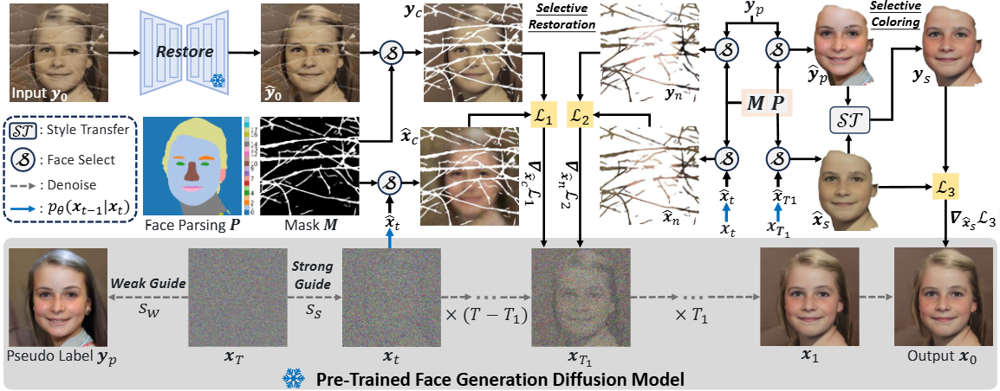

Self-Supervised Selective-Guided Diffusion Model
for Old-Photo Face Restoration

Materials
Abstract
Old-photo face restoration poses significant challenges due to compounded degradations such as breakage, fading, and severe blur. Existing pre-trained diffusion-guided methods either rely on explicit degradation priors or global statistical guidance, which struggle with localized artifacts or face color. We propose Self-Supervised Selective-Guided Diffusion (SSDiff), a framework that leverages pseudo-reference faces generated by a pre-trained diffusion model under weak guidance. These pseudo-labels exhibit structurally aligned contours and natural colors, enabling region-specific restoration via staged supervision: structural guidance applied throughout the denoising process and color refinement in later steps, aligned with the coarse-to-fine nature of diffusion. By incorporating face parsing maps and scratch masks, our method selectively restores breakage regions while avoiding identity mismatch. We further construct VintageFace, a 300-image benchmark of real old face photos with varying degradation levels. SSDiff outperforms existing GAN-based and diffusion-based methods in perceptual quality, fidelity, and regional controllability.
Method

Overview of SSDiff
(a) We first generate pseudo labels for faces using a pre-trained generative diffusion model under weak guidance. (b) Under strong guidance in pre-trained generative diffusion model, we employ pseudo-labeled faces and apply diffusion guidance techniques to first perform selective restoration, followed by selective colouring.
Process of Our SSDiff
Results
Citation
If you find our paper or data useful for your research, please consider citing our work:
@inproceedings{li2025self,
title={Self-Supervised Selective-Guided Diffusion Model for Old-Photo Face Restoration},
author={Li, Wenjie and Wang, Xiangyi and Guo, Heng and Gao, GuangWei and Ma, Zhanyu},
booktitle={NeurIPs},
year={2025}
}
Contact
If you have any question, please contact us at lewj2408@gmail.com.